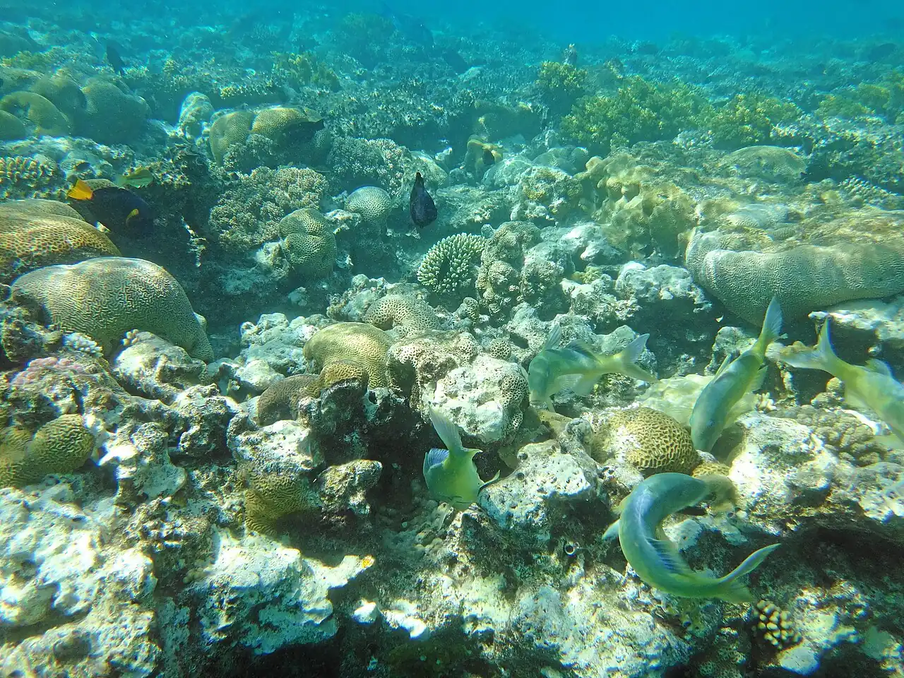

Coral Beach — Eilat
Eilat, Israël · snorkeling, plongée

Réserve naturelle au sud d’Eilat, au bord du golfe d’Aqaba, où un récif frangeant commence à quelques mètres de la plage. On entre dans l’eau par des passerelles pour ne pas abîmer les coraux.
- Lieu
- Eilat, Israël
- Niveau
- Débutant
- Activités
- snorkeling, plongée
- Type d'eau
- Mer / océan
- Coordonnées
- 29.51, 34.93 (position approximative du secteur)
Dangers à connaître
- Coraux coupants et oursins : ne marche pas sur le récif.
- Poissons-pierres et poissons-lions : regarde sans toucher.
Le conseil d'Ocean Buddy
Entre dans l’eau uniquement par les passerelles et ne te tiens jamais debout sur le récif. Consulte aussi les conseils aux voyageurs avant de partir.
Ouvrir dans Ocean Buddy Télécharger sur l'App Store
Source : Fiche Ocean Buddy · septembre 2026 · à vérifier localement.